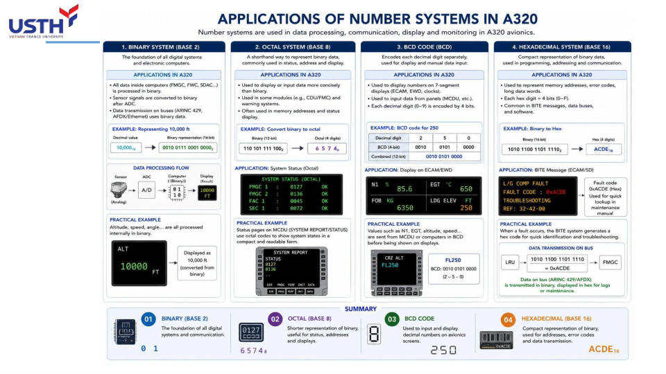
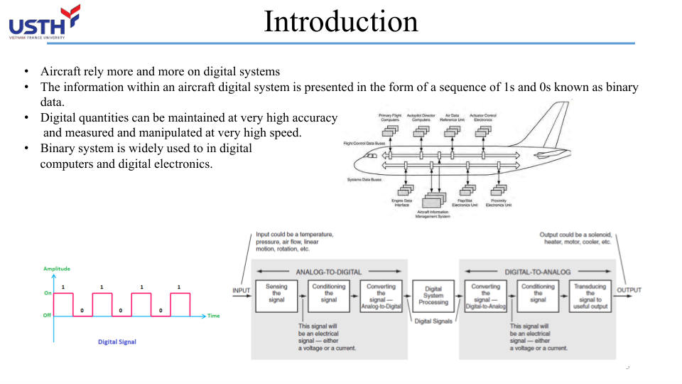
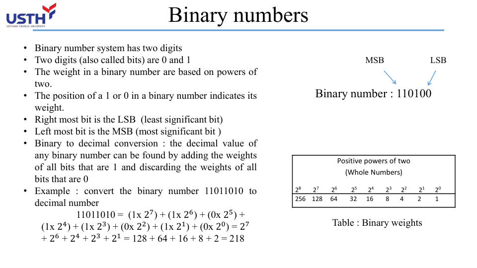
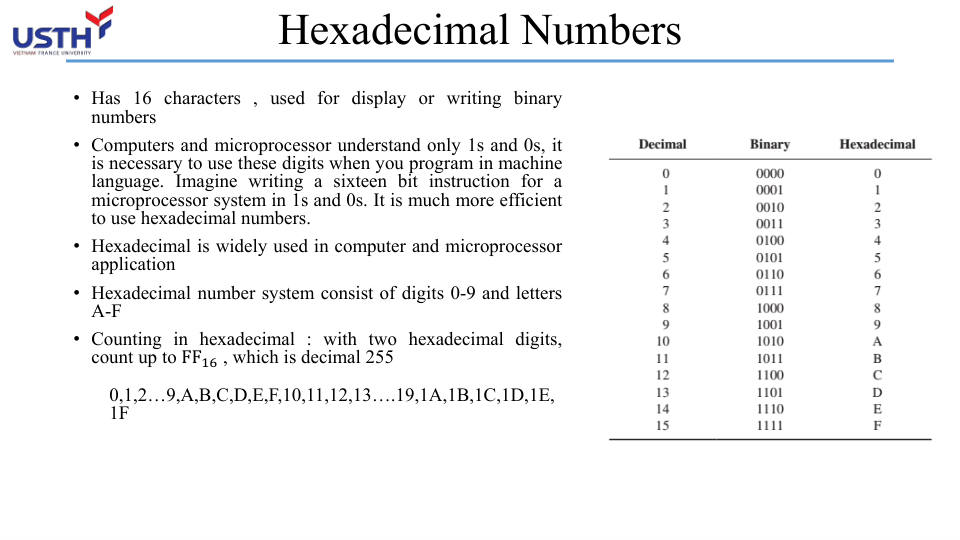
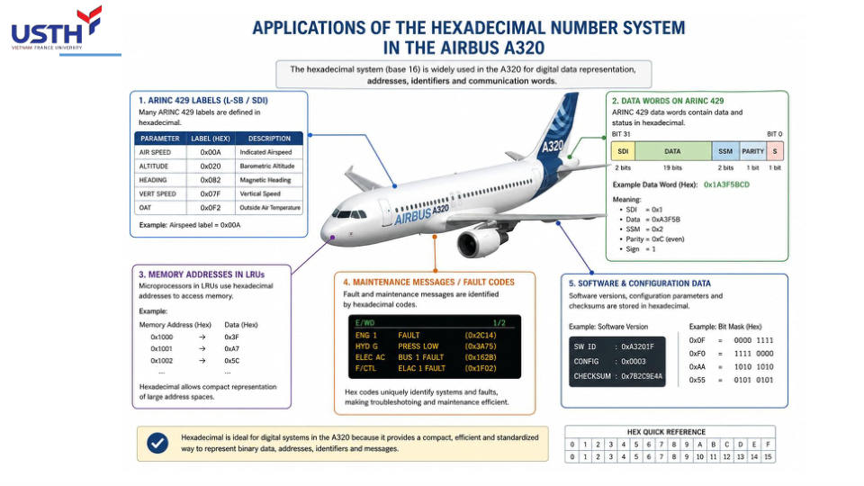
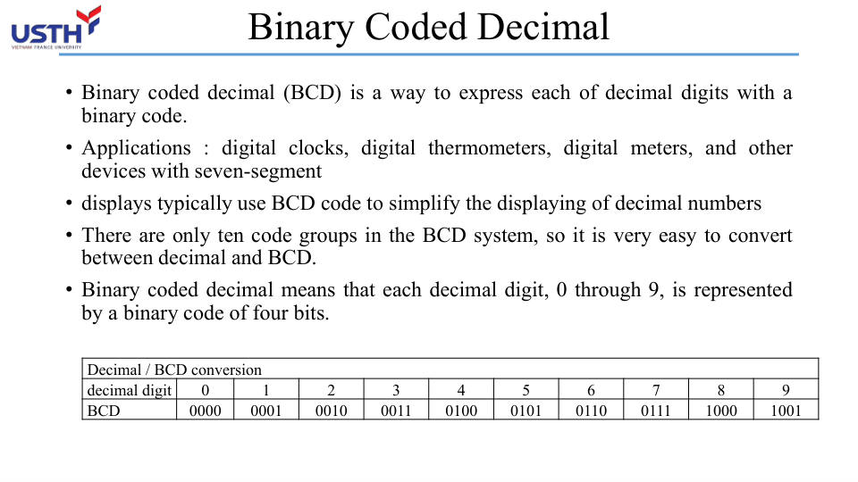
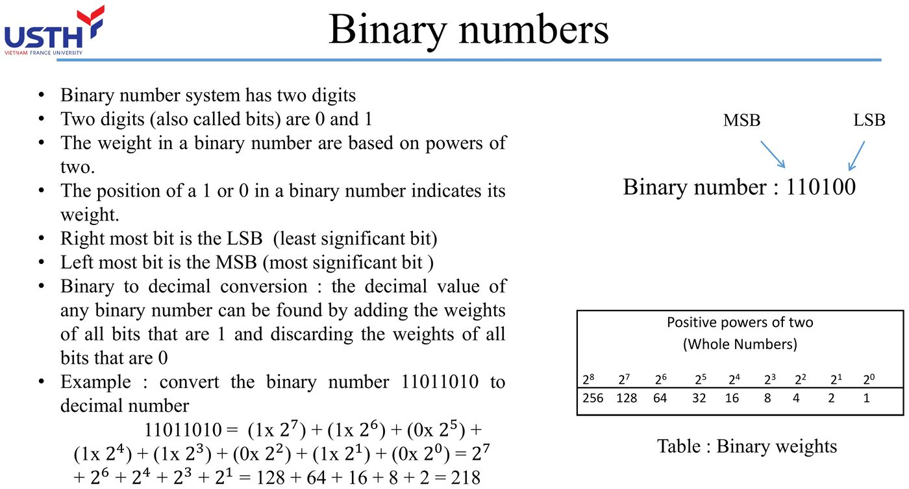
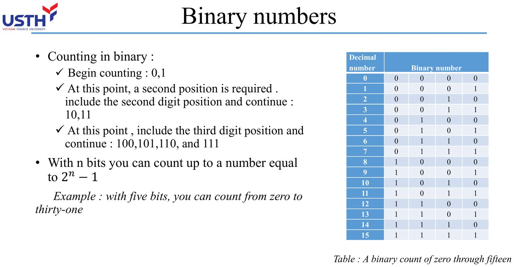

01. Hệ đếm trong hệ thống số hàng không
Mọi dữ liệu bên trong máy tính hàng không (FMGC, FWC, SDAC…) đều được xử lý ở dạng nhị phân, nhưng con người cần các hệ đếm trung gian (bát phân, thập lục phân, BCD) để đọc/nhập dữ liệu thuận tiện hơn. Module này xây lại 4 hệ đếm cốt lõi và ứng dụng thực tế của từng hệ trên Airbus A320.
CO/CLO: CO2Thời lượng (ước tính): ≈ 3,9 giờ lý thuyết27 slideCâu hỏi: 86 (57 gốc)
Slide: Number system tr.1-27 · Tooley Ch.2 (tr.25-38) · Floyd Ch.2 (tr.65-124) · Bản đồ nội dung sách
Tooley: Ch.2 Number systems (p.25-38): decimal, binary, octal, hex, ASCII
Floyd: Ch.2 Number Systems, Operations, and Codes (p.65-124)
Khớp trực tiếp gần như 1-1: cả 2 sách đều dành nguyên 1 chương cho đúng 4 hệ đếm này.
- Vì sao máy tính hàng không cần nhiều hệ đếm?
- Hệ nhị phân và phép chuyển đổi
- Hệ bát phân và thập lục phân
- Mã BCD và ASCII
- Áp dụng trên Airbus A320
📷 Slide gốc của giảng viên (bấm để phóng to)
27 slide
 num·1
num·1 num·2
num·2

num·3 num·4
num·4

num·5 num·6
num·6 num·7
num·7 num·8
num·8

num·9 num·10
num·10 num·11
num·11 num·12
num·12 num·13
num·13 num·14
num·14 num·15
num·15

num·16

num·17 num·18
num·18 num·19
num·19 num·20
num·20 num·21
num·21 num·22
num·22 num·23
num·23 num·24
num·24

num·25 num·26
num·26 num·27
num·27Bài giảng
Vì sao máy tính hàng không cần nhiều hệ đếm?
- Ôn lại hệ thập phân (decimal): hệ con người dùng hằng ngày
- Hệ nhị phân (binary): nền tảng của mọi mạch số
- Hệ bát phân (octal) và thập lục phân (hexadecimal): cách viết gọn của nhị phân
- Mã BCD: cầu nối giữa số thập phân và hiển thị 7 đoạn
Vì sao không dùng luôn hệ thập phân trong mạch điện tử?
Mạch điện tử số chỉ phân biệt tin cậy được hai mức điện áp (cao/thấp), không thể phân biệt chính xác 10 mức điện áp khác nhau để biểu diễn 10 chữ số thập phân. Vì vậy phần cứng buộc phải dùng hệ nhị phân (2 mức), còn các hệ đếm khác (bát phân, hex, BCD) chỉ là cách con người viết gọn lại chuỗi nhị phân đó.
📖 Giải thích cho người mới bắt đầu
Hãy hình dung một công tắc đèn: nó chỉ có hai trạng thái bật hoặc tắt, và ta phân biệt được ngay dù điện áp dao động nhẹ. Bây giờ hình dung công tắc có 10 nấc ứng với các chữ số 0 đến 9: chỉ cần nhiễu điện hoặc linh kiện xuống cấp, mạch có thể đọc nhầm nấc 4 thành nấc 5.
Vì thế kỹ sư thiết kế mạch số chỉ cho phép hai mức điện áp (thường 0V và 5V). Khoảng cách giữa hai mức đủ rộng để chịu nhiễu tốt. Bát phân, hex và BCD ở các phần sau không phải cách tính khác trong phần cứng, chúng chỉ là cách con người viết gọn lại đúng chuỗi nhị phân đó.
Bốn hệ đếm cốt lõi trong avionics
| Hệ đếm | Cơ số | Chữ số dùng | Vai trò chính |
|---|---|---|---|
| Nhị phân | 2 | 0,1 | Xử lý bên trong máy tính |
| Bát phân | 8 | 0-7 | Mã trạng thái hệ thống gọn |
| Thập lục phân | 16 | 0-9,A-F | Địa chỉ bộ nhớ, mã lỗi BITE |
| BCD | n/a | 4 bit/chữ số | Hiển thị số thập phân trên màn hình |

📖 Giải thích cho người mới bắt đầu
Hình trên trích từ slide bài giảng gốc, tóm tắt bốn hệ đếm của module cùng vai trò thật của từng hệ trên A320. Nhị phân là ngôn ngữ nội bộ của mọi máy tính (FMGC, FWC, SDAC). Bát phân viết gọn mã trạng thái trên vài trang MCDU đời cũ. Hex dùng cho địa chỉ bộ nhớ và mã lỗi BITE vì ngắn gọn, dễ tra. BCD là cầu nối để số nhị phân hiện thành các chữ số quen thuộc trên màn hình buồng lái.
Nếu mới học lần đầu, đừng cố nhớ từng chi tiết trong hình. Chỉ cần giữ ý chính: bốn hệ đếm, bốn vai trò, nhưng cùng mô tả một dữ liệu bên dưới.
Trọng số vị trí: nguyên lý dùng chung cho MỌI hệ đếm
Trong bất kỳ hệ đếm cơ số b nào, mỗi chữ số ở vị trí i (tính từ phải, bắt đầu từ 0) có trọng số bⁱ. Giá trị của cả số = tổng (chữ số × trọng số).
📖 Giải thích cho người mới bắt đầu
Đây là công thức tổng quát nhất của cả module, đúng cho mọi cơ số, nên hãy đọc chậm. "Trọng số vị trí" nghĩa là giá trị thật của một chữ số phụ thuộc vào việc nó đứng ở đâu. Trong số 528, chữ số 5 không đáng giá 5 mà đáng giá 500 vì nó đứng ở hàng trăm.
Công thức N = Σ dᵢ·bⁱ chỉ nói lại điều đó bằng ký hiệu. dᵢ là chữ số ở vị trí i (đếm từ phải sang, bắt đầu từ 0), b là cơ số, bⁱ là trọng số của vị trí, còn Σ nghĩa là "cộng tất cả lại". Slide sau sẽ dùng công thức này cho một số thập phân quen thuộc trước khi sang nhị phân.
Ví dụ: áp dụng trọng số cho số thập phân quen thuộc
Số 528 (hệ 10) = 5·10² + 2·10¹ + 8·10⁰ = 500+20+8 = 528. Đây chính là nguyên lý mà chương trình học sẽ áp dụng lại y hệt cho cơ số 2, 8, 16: chỉ đổi giá trị b.

📖 Giải thích cho người mới bắt đầu
Ví dụ 528 = 5×10² + 2×10¹ + 8×10⁰ chỉ là cách viết tường minh của phép cộng 500+20+8 mà ai cũng đã học từ tiểu học. Điều mới duy nhất là bạn thấy nó khớp với công thức trọng số vừa học.
Hình đính kèm cho thấy hệ thập phân vẫn là thứ phi công và kỹ sư nhìn thấy hằng ngày trên EFIS, FMS và bảng trọng lượng máy bay. Lý do chỉ là con người quen đếm bằng mười ngón tay. Bên trong máy tính, mọi số này đã được đổi sang nhị phân trước khi tính, rồi đổi ngược lại thập phân chỉ để người đọc.
Vì sao kỹ thuật viên KHÔNG đọc trực tiếp chuỗi nhị phân dài?
Một địa chỉ bộ nhớ 16-bit viết ở nhị phân dài 16 ký tự (vd 1010110011110000), rất dễ đọc nhầm hoặc chép sai 1 bit khi ghi tay. Viết lại ở hex chỉ còn 4 ký tự (ACF0): giảm sai sót thao tác, đây là lý do kỹ thuật thực dụng chứ không chỉ lý thuyết.
📖 Giải thích cho người mới bắt đầu
Thử so sánh: chuỗi nhị phân 1010110011110000 dài 16 ký tự. Chép nhầm hoặc đọc nhầm một bit ở giữa là cả địa chỉ sai, và mắt người rất khó phát hiện lỗi trong một dãy toàn số 0 và 1 giống nhau.
Viết lại ở hex chỉ còn 4 ký tự (ACF0). Ít ký tự hơn thì ít cơ hội chép sai hơn, và mắt phân biệt các ký tự 0-9, A-F dễ hơn nhiều so với dãy 0 và 1. Đây là lý do thực dụng, không chỉ lý do toán học, khiến tài liệu bảo dưỡng luôn ghi địa chỉ và mã lỗi bằng hex.
Bốn hệ đếm không tách rời: luôn phải quy đổi qua lại
- Máy tính XỬ LÝ ở nhị phân
- Màn hình HIỂN THỊ cho phi công ở BCD/thập phân
- Tài liệu bảo dưỡng GHI LẠI mã lỗi ở hex
- Một số trang trạng thái hệ thống cũ dùng bát phân
Kỹ sư bảo dưỡng phải thành thạo quy đổi cả 4 chiều, không chỉ 1 chiều duy nhất.

📖 Giải thích cho người mới bắt đầu
Sơ đồ tam giác đính kèm cho thấy không hệ đếm nào đứng một mình. Cả bốn hệ đều có mũi tên "Conversion" hai chiều nối với các hệ còn lại, nghĩa là kỹ sư phải đổi qua lại liên tục.
Trong hình, mỗi hệ có một số minh hoạ riêng: (9856)₁₀, (101010101)₂, (7537)₈ và (A89DE)₁₆. Đây là bốn số khác nhau, chỉ để cho thấy mỗi hệ dùng ký hiệu và chữ số riêng, và chỉ số nhỏ bên dưới cho biết cơ số. Bốn gạch đầu dòng bên cạnh nêu vai trò thật: máy tính xử lý ở nhị phân, màn hình hiển thị ở BCD hoặc thập phân, tài liệu bảo dưỡng ghi mã lỗi ở hex, một số trang trạng thái cũ dùng bát phân.
⚠️ Bẫy: nhầm 'hệ đếm' với 'đơn vị đo'
Học viên mới thường nhầm 10₁₆ (mười sáu, hệ hex) với 10 (mười, hệ thập phân) vì cách viết giống hệt nhau. Luôn phải ghi rõ subscript cơ số khi trình bày, đúng quy ước trong sách Tooley: (75)₈, (75)₁₀, (75)₁₆ là BA giá trị hoàn toàn khác nhau dù cùng ba ký tự '7','5'.
📖 Giải thích cho người mới bắt đầu
Đây là lỗi rất dễ mắc: thấy "10" và đọc ngay là "mười" theo thói quen. Nhưng 10₁₆ (đọc "một không, hệ mười sáu") có giá trị thật là 16, còn 10₂ có giá trị 2 và 10₈ có giá trị 8.
Ba số (75)₈, (75)₁₀, (75)₁₆ có ký tự giống hệt nhau nhưng là ba giá trị khác hẳn: 61, 75 và 117 ở hệ thập phân. Quy tắc sống còn: luôn ghi rõ chỉ số cơ số (₂, ₈, ₁₀, ₁₆) mỗi khi viết một số không thuộc hệ thập phân mặc định.
Áp dụng A320: vì sao FMGC cần hiểu cả 4 hệ đếm
FMGC (Flight Management Guidance Computer) nhận dữ liệu nhị phân từ cảm biến, tính toán nội bộ ở nhị phân, nhưng phải XUẤT RA hex cho log bảo dưỡng, BCD cho hiển thị MCDU, và đôi khi bát phân cho mã trạng thái: một chip xử lý số phải chuyển đổi qua lại liên tục giữa các hệ này trong thời gian thực.
📖 Giải thích cho người mới bắt đầu
FMGC (Flight Management Guidance Computer) cho thấy bốn hệ đếm không phải lý thuyết suông. Nó nhận tín hiệu cảm biến đã số hoá thành nhị phân và làm mọi phép tính nội bộ bằng nhị phân, vì đó là ngôn ngữ duy nhất bộ vi xử lý hiểu.
Khi cần xuất kết quả ra ngoài, nó phải "phiên dịch" theo mục đích: hex cho log bảo dưỡng, BCD cho màn hình MCDU của phi công, đôi khi bát phân cho vài mã trạng thái cũ. Một con chip làm việc phiên dịch này hàng nghìn lần mỗi giây, theo thời gian thực.
Sơ đồ luồng dữ liệu số trong buồng lái
Cảm biến (analog) → ADC → nhị phân (xử lý trong FMGC/FWC) → mã hoá lại thành BCD/hex → hiển thị EFIS/ECAM hoặc ghi log BITE. Mỗi mũi tên trong chuỗi này là một điểm cần hiểu đúng hệ đếm đang dùng.
📖 Giải thích cho người mới bắt đầu
Sơ đồ mô tả vòng đời của một giá trị đo, ví dụ áp suất khí quyển. Cảm biến tạo tín hiệu analog (điện áp biến thiên liên tục). Bộ ADC (Analog-to-Digital Converter) đổi tín hiệu đó thành chuỗi nhị phân rời rạc. FMGC hoặc FWC tính toán hoàn toàn bằng nhị phân. Kết quả cuối cùng được mã hoá lại thành BCD hoặc hex tuỳ nơi hiển thị (EFIS/ECAM) hay nơi ghi log (BITE).
Mỗi mũi tên là một phép đổi hệ đếm thật trong phần cứng. Nếu một bước đổi sai hệ đếm, giá trị phi công nhìn thấy sẽ sai theo.
Tự kiểm tra nhanh (không chấm điểm)
Dừng lại 30 giây: bạn có thể giải thích bằng lời vì sao một kỹ sư bảo dưỡng KHÔNG thể chỉ học một hệ đếm duy nhất mà bỏ qua 3 hệ còn lại không? Nếu chưa chắc, xem lại 2 slide đầu trước khi sang Phần 2.
📖 Giải thích cho người mới bắt đầu
Trước khi sang Phần 2, hãy tự giải thích bằng lời của mình, không nhìn slide: vì sao kỹ sư bảo dưỡng không thể chỉ học một hệ đếm rồi bỏ qua ba hệ còn lại?
Câu trả lời đầy đủ nên có ba ý. Máy tính bên trong luôn xử lý ở nhị phân. Màn hình cho phi công luôn hiện thập phân hoặc BCD dễ đọc. Tài liệu bảo dưỡng và log lỗi dùng hex vì gọn và ít sai khi tra cứu. Nếu bạn nói trôi chảy cả ba ý mà không cần đọc lại, bạn đã sẵn sàng cho Phần 2.
Hệ nhị phân và phép chuyển đổi
- Trọng số bit: MSB/LSB, luỹ thừa của 2
- Chuyển thập phân ↔ nhị phân bằng phép chia/nhân liên tiếp
- Bù hai (two's complement) để biểu diễn số âm
MSB, LSB và trọng số luỹ thừa của 2
Trong số nhị phân, bit ngoài cùng bên trái là MSB (Most Significant Bit: trọng số lớn nhất), bit ngoài cùng bên phải là LSB (Least Significant Bit: trọng số 2⁰=1).
| 2⁷ | 2⁶ | 2⁵ | 2⁴ | 2³ | 2² | 2¹ | 2⁰ |
|---|---|---|---|---|---|---|---|
| 128 | 64 | 32 | 16 | 8 | 4 | 2 | 1 |
📖 Giải thích cho người mới bắt đầu
MSB (Most Significant Bit) là bit có trọng số lớn nhất, LSB (Least Significant Bit) là bit có trọng số nhỏ nhất. Chúng giống "hàng trăm" và "hàng đơn vị" trong số thập phân. Trong số 110100, bit ngoài cùng bên trái (MSB) có trọng số 2⁵=32, bit ngoài cùng bên phải (LSB) có trọng số 2⁰=1.
Bảng luỹ thừa của 2 (1, 2, 4, 8, 16, 32, 64, 128) là "bảng cửu chương" của hệ nhị phân. Thuộc tám giá trị này, mọi phép đổi nhị phân sang thập phân ở các slide sau sẽ nhanh hơn nhiều.
Ví dụ từng bước: đổi nhị phân → thập phân
Đổi 11011010₂ sang thập phân: cộng đúng trọng số của các bit bằng 1:
11011010 = 128+64+0+16+8+0+2+0 = 218
(Đây chính là ví dụ gốc trong Tooley: chỉ cộng trọng số ở vị trí có bit 1, bỏ qua vị trí bit 0.)
📖 Giải thích cho người mới bắt đầu
Quy tắc chỉ có một dòng: cộng trọng số của những vị trí có bit 1, bỏ qua hoàn toàn những vị trí có bit 0. Không trừ, không nhân, chỉ đơn giản là không cộng.
Với 11011010, các vị trí có bit 1 mang trọng số 128, 64, 16, 8 và 2. Hai vị trí bit 0 (trọng số 32 và 1) bị bỏ qua. Cộng lại: 128+64+16+8+2 = 218. Mẹo kiểm tra: đếm số bit 1 trong dãy gốc (ở đây là 5), rồi đếm số số hạng bạn đã cộng. Hai con số khác nhau nghĩa là bạn đã bỏ sót hoặc cộng thừa một trọng số.
Ví dụ từng bước: đổi thập phân → nhị phân (chia liên tiếp)
Đổi 45 sang nhị phân bằng chia liên tiếp cho 2, đọc số dư từ dưới lên:
| Phép chia | Thương | Dư |
|---|---|---|
| 45÷2 | 22 | 1 |
| 22÷2 | 11 | 0 |
| 11÷2 | 5 | 1 |
| 5÷2 | 2 | 1 |
| 2÷2 | 1 | 0 |
| 1÷2 | 0 | 1 |
Đọc dư từ dưới lên: 101101 (khớp đúng kết quả đã kiểm chứng bằng code trong notebook 01).
📖 Giải thích cho người mới bắt đầu
Cách này chạy ngược slide trước. Thay vì cộng trọng số, ta chia số thập phân cho 2 liên tiếp và ghi lại số dư (luôn là 0 hoặc 1) sau mỗi lần chia, dừng khi thương bằng 0.
Với 45: 45÷2 = 22 dư 1; 22÷2 = 11 dư 0; 11÷2 = 5 dư 1; 5÷2 = 2 dư 1; 2÷2 = 1 dư 0; 1÷2 = 0 dư 1. Chỗ dễ nhầm nhất là thứ tự đọc: phải đọc số dư từ dưới lên để ra 101101, vì số dư đầu tiên là bit nhỏ nhất (LSB) còn số dư cuối cùng là bit lớn nhất (MSB).
Cách nhanh hơn: cộng trực tiếp trọng số 2ⁱ (không cần chia)
45 = 32+8+4+1 → đánh dấu 1 vào đúng 4 vị trí trọng số 32,8,4,1, còn lại là 0 → 101101. Cách này nhanh hơn khi làm tay, nhưng cách chia liên tiếp ở slide trước là cách TỔNG QUÁT áp dụng được cho cả octal/hex.
📖 Giải thích cho người mới bắt đầu
Cách này cũng là đảo ngược của phép đổi nhị phân sang thập phân: ta đi tìm những trọng số cộng lại đúng bằng số cho trước. Với 45, trừ dần trọng số lớn nhất còn vừa: 45-32 = 13, 13-8 = 5, 5-4 = 1, 1-1 = 0. Vậy các trọng số 32, 8, 4, 1 nhận bit 1, còn 64, 16, 2 nhận bit 0, ra 101101 khớp slide trước.
Cách này nhanh khi nhẩm số nhỏ. Nhưng phép chia liên tiếp mới là cách chắc chắn không bỏ sót, nhất là với số lớn hoặc khi thi có áp lực thời gian.
Phép cộng nhị phân: quy tắc nhớ (carry)
Ví dụ: 0110 + 0101 = 1011 (6+5=11, kiểm tra lại bằng thập phân để tự tin quy tắc nhớ đã áp dụng đúng).

📖 Giải thích cho người mới bắt đầu
Bảng cộng nhị phân chỉ có bốn trường hợp cần nhớ (bảng cộng thập phân có tới 100 trường hợp): 0+0=0, 0+1=1, 1+0=1 và trường hợp đặc biệt 1+1=10, đọc là "viết 0, nhớ 1", giống hệt "9+1=10, viết 0 nhớ 1" trong thập phân.
Mạch điện tử làm đúng phép cộng này gọi là half adder (bộ cộng bán phần). Hình cho thấy nó chỉ cần hai cổng: cổng XOR cho ra tổng Σ = A⊕B (kết quả cộng, chưa tính nhớ), và cổng AND cho ra số nhớ Cout = AB. Cổng AND chỉ ra 1 khi cả hai đầu vào đều là 1, khớp đúng quy tắc 1+1 là trường hợp duy nhất sinh ra số nhớ. Bạn sẽ gặp lại XOR và AND ở Module 02.
Số âm trong nhị phân: vì sao cần bù hai
Nhị phân thuần không có dấu trừ. Để biểu diễn số âm, hệ thống số dùng bù hai (two's complement): đảo tất cả bit rồi cộng thêm 1. Đây là cách CPU thực hiện phép trừ chỉ bằng mạch cộng.
📖 Giải thích cho người mới bắt đầu
Toán thông thường viết dấu trừ trước một số để chỉ số âm. Nhưng mạch điện tử chỉ có hai mức điện áp (0 và 1), không còn mức thứ ba để biểu diễn riêng dấu trừ.
Giải pháp của các kỹ sư thiết kế CPU là bù hai (two's complement): một quy tắc biến đổi bit sao cho việc cộng một số với bù hai của số khác cho ra đúng kết quả phép trừ. Nhờ đó CPU chỉ cần xây một mạch cộng duy nhất mà làm được cả cộng lẫn trừ, tiết kiệm đáng kể số linh kiện trong chip.
Ví dụ từng bước: bù hai của 10110
Bước 1: đảo bit: 10110 → 01001.
Bước 2: cộng 1: 01001 + 1 = 01010.
(Khớp đúng câu hỏi gốc Tooley Ch.2 Q3: xem quiz Module 01.)
📖 Giải thích cho người mới bắt đầu
Bù hai chỉ có hai bước, làm đúng thứ tự. Bước 1: đảo từng bit (0 thành 1, 1 thành 0), 10110 thành 01001. Bước 2: cộng thêm 1, 01001 + 1 = 01010. Vậy 01010 là bù hai của 10110, tức giá trị âm tương ứng.
Cách tự kiểm tra không cần tra bảng: cộng số gốc với kết quả, 10110 + 01010 = 100000. Bỏ bit tràn ở đầu còn 00000, nghĩa là bạn làm đúng, vì một số cộng với số âm của chính nó luôn bằng 0.
⚠️ Bẫy: quên bước cộng 1 sau khi đảo bit
Lỗi phổ biến nhất khi tính bù hai là chỉ đảo bit rồi DỪNG LẠI: đó là bù một (one's complement), không phải bù hai. Luôn kiểm tra lại bằng cách cộng số gốc với kết quả bù hai: nếu tổng tràn ra ngoài số bit ban đầu (vd 10110+01010=100000, bỏ bit tràn còn 00000), kết quả đúng.
📖 Giải thích cho người mới bắt đầu
Đây là lỗi phổ biến nhất khi mới học bù hai: chỉ làm Bước 1 (đảo bit) rồi dừng, nghĩ rằng thế là xong. Kết quả đó gọi là bù một (one's complement), một khái niệm khác, không dùng để biểu diễn số âm trong hầu hết hệ thống hiện đại.
Bù một của 10110 chỉ là 01001, còn bù hai đúng phải là 01010. Cách phát hiện mình có quên bước cộng 1 không: luôn làm phép cộng kiểm tra ở slide trước. Nếu tổng không ra 0 (sau khi bỏ bit tràn), gần như chắc chắn bạn đã quên cộng 1.
Áp dụng A320: vì sao ADIRU xuất dữ liệu nhị phân 2 chiều
ADIRU (Air Data Inertial Reference Unit) phải biểu diễn cả giá trị dương (độ cao tăng) và âm (tốc độ giảm/góc nghiêng âm): bù hai cho phép FMGC cộng/trừ các giá trị này bằng đúng một mạch cộng nhị phân duy nhất, không cần mạch trừ riêng.

📖 Giải thích cho người mới bắt đầu
ADIRU (Air Data Inertial Reference Unit) đo những giá trị có thể tăng hoặc giảm liên tục khi bay: độ cao tăng lúc leo, tốc độ giảm lúc hãm, góc chúc mũi dương hoặc âm. Nếu không có bù hai, hệ thống cần một mạch cộng cho số dương và một mạch trừ riêng cho số âm, phần cứng phức tạp gấp đôi.
Nhờ bù hai, FMGC chỉ cần một mạch cộng nhị phân để xử lý cả hai chiều tăng và giảm của mọi giá trị bay. Hình đính kèm cho thấy toàn bộ dữ liệu cảm biến trên A320 được xử lý theo nguyên lý nhị phân này.
Tự kiểm tra nhanh (không chấm điểm)
Tự tính nhẩm: bù hai của số nhị phân 4-bit 0110 là gì? (Gợi ý: đảo thành 1001, cộng 1 → 1010). Nếu ra khác, xem lại 2 bước ở slide bù hai phía trên.
📖 Giải thích cho người mới bắt đầu
Tự làm trước khi sang Phần 3: tìm bù hai của số 4-bit 0110, chưa nhìn gợi ý. Nhắc lại hai bước: đảo bit (0110 thành 1001), rồi cộng 1 (1001 + 1 = 1010).
Nếu bạn ra 1010, hãy kiểm tra bằng phép cộng: 0110 + 1010 = 10000, bỏ bit tràn còn 0000, đúng như mong đợi. Nếu ra kết quả khác, nhiều khả năng bạn dừng ở bước đảo bit (ra 1001) mà quên cộng 1, đúng cái bẫy của slide trước. Xem lại slide đó rồi thử lại.
Hệ bát phân và thập lục phân
- Nhóm 3 bit ↔ 1 chữ số bát phân, nhóm 4 bit ↔ 1 chữ số hex
- Ứng dụng: mã trạng thái hệ thống (octal), địa chỉ bộ nhớ/mã lỗi BITE (hex)
Vì sao nhóm 3 bit cho octal, nhóm 4 bit cho hex?
2³=8 nên mỗi chữ số bát phân biểu diễn đúng 3 bit; 2⁴=16 nên mỗi chữ số hex biểu diễn đúng 4 bit. Đây KHÔNG phải quy ước tuỳ ý: nó xuất phát trực tiếp từ định nghĩa cơ số.
📖 Giải thích cho người mới bắt đầu
Câu trả lời nằm ở luỹ thừa. 2³ = 8 nghĩa là 3 bit biểu diễn được đúng 8 giá trị (000 đến 111), khớp chính xác với 8 chữ số bát phân (0 đến 7). Vì vậy mỗi chữ số bát phân tương ứng gọn đúng 3 bit. Tương tự, 2⁴ = 16 khớp với 16 ký hiệu hex (0-9 và A-F), nên mỗi chữ số hex tương ứng đúng 4 bit.
Đây không phải quy ước tuỳ tiện mà là hệ quả toán học. Nhóm sai số bit, ví dụ nhóm 3 bit rồi gán cho hex, sẽ cho kết quả sai ngay.
Bảng tra nhanh: nhị phân ↔ hex (bắt buộc thuộc lòng)
| Hex | Nhị phân | Hex | Nhị phân |
|---|---|---|---|
| 0 | 0000 | 8 | 1000 |
| 1 | 0001 | 9 | 1001 |
| 2 | 0010 | A | 1010 |
| 3 | 0011 | B | 1011 |
| 4 | 0100 | C | 1100 |
| 5 | 0101 | D | 1101 |
| 6 | 0110 | E | 1110 |
| 7 | 0111 | F | 1111 |
📖 Giải thích cho người mới bắt đầu
Bảng này là công cụ quan trọng nhất của Phần 3. Nó liệt kê đủ 16 giá trị hex và đúng 4 bit nhị phân của từng giá trị. Vì mỗi chữ số hex luôn ứng với một mẫu 4 bit cố định, bạn đổi bằng cách tra bảng, không cần tính gì thêm. Đó là lý do đổi nhị phân sang hex nhanh và ít sai hơn nhiều so với đi vòng qua thập phân.
Lời khuyên: chép tay bảng này vài lần cho tới khi nhớ được A=1010, B=1011, C=1100, D=1101, E=1110, F=1111. Sáu giá trị này là những chỗ người mới hay nhầm nhất.
Ví dụ từng bước: nhị phân → bát phân bằng nhóm 3 bit
Đổi 100010001₂ sang bát phân: nhóm từ phải sang trái theo 3 bit: 100 | 010 | 001 → 4 2 1 → 421₈. (Khớp Tooley Ch.2 Q8.)
📖 Giải thích cho người mới bắt đầu
Quy trình nhóm 3 bit áp dụng đúng nguyên lý 2³ = 8 ở slide đầu phần. Tách chuỗi 100010001 thành từng nhóm 3 bit, bắt đầu từ bên phải: 100 | 010 | 001. Tra từng nhóm ở bảng bát phân (000=0, 001=1, 010=2, ..., 111=7) được 4, 2, 1, ghép lại thành 421₈.
Lỗi hay gặp nhất là nhóm từ bên trái. Các nhóm bị lệch và kết quả sai hoàn toàn, nhất là khi tổng số bit không chia hết cho 3 (xem slide đệm số 0 ở phía sau).
Ví dụ từng bước: hex → bát phân PHẢI qua nhị phân trung gian
111₁₆ → nhị phân từng chữ số hex (4 bit/số): 1→0001, 1→0001, 1→0001 → 000100010001₂.
Nhóm lại theo 3 bit từ phải: 000 100 010 001 → 4 2 1 → 421₈. Không thể suy trực tiếp hex→octal mà bỏ qua bước này.
📖 Giải thích cho người mới bắt đầu
Không có công thức đổi thẳng từ hex sang bát phân. Bạn luôn phải đi qua nhị phân trung gian, gồm hai giai đoạn.
Giai đoạn 1: mở mỗi chữ số hex thành đúng 4 bit: 1→0001, 1→0001, 1→0001, ghép lại 000100010001. Giai đoạn 2: nhóm lại chuỗi đó theo 3 bit từ phải sang: 000 100 010 001, tức 4, 2, 1, ra 421₈. Nếu cố đoán tắt kiểu "hex F ứng với chữ số bát phân nào" mà bỏ bước trung gian, bạn gần như chắc chắn sai, vì hai hệ này không có quan hệ chia hết đơn giản với nhau.
Ví dụ từng bước: nhị phân → hex bằng nhóm 4 bit
Đổi 10110011₂ sang hex: nhóm 4 bit: 1011 | 0011 → B | 3 → B3₁₆. (Khớp Tooley Ch.2 Q11.)
📖 Giải thích cho người mới bắt đầu
Nhóm 4 bit cho hex làm giống hệt nhóm 3 bit cho bát phân, chỉ khác kích thước nhóm. Tách 10110011 thành hai nhóm 4 bit từ bên phải: 1011 | 0011. Tra bảng hex được B (1011) và 3 (0011), ghép lại B3₁₆.
Mẹo nhớ nhanh: chữ B đứng sau A=10 một bậc, nên B = 11 = 1011 ở nhị phân. Khi quen bạn sẽ không phải tra bảng mọi lần. Nhớ luôn nhóm từ phải sang trái, giống lưu ý ở slide nhóm 3 bit.
Đệm 0 ở đầu khi số bit không chia hết
Đổi 111001110₂ (9 bit) sang octal: đệm thêm 0 ở đầu cho đủ bội số 3 → 011 100 111 0 → sai, phải đệm cho đủ 9→9 chia hết cho 3 rồi: 111 001 110 → 7 1 6 → 716₈. Luôn đếm số bit trước khi nhóm, đệm 0 bên TRÁI nếu thiếu.
📖 Giải thích cho người mới bắt đầu
Trước khi nhóm bit, luôn đếm tổng số bit để biết có cần đệm số 0 hay không: bát phân cần bội số của 3, hex cần bội số của 4. Với 111001110 (đúng 9 bit, đã là bội của 3) thì nhóm thẳng: 111 001 110, tức 7, 1, 6, ra 716₈.
Nếu số bit không chia hết, ví dụ 7 bit mà nhóm theo 3, hãy thêm số 0 vào đầu bên trái, không phải bên phải. Thêm 0 bên trái không đổi giá trị, giống viết 007 thay cho 7 trong thập phân. Thêm 0 bên phải thì đổi hẳn giá trị của số.
Vì sao hex phổ biến hơn octal trong hệ thống hiện đại
Hầu hết bus dữ liệu hiện đại (8/16/32-bit) là bội số của 4, nên hex nhóm vừa khít không cần đệm; trong khi octal (nhóm 3) thường lệch với các độ rộng bus phổ biến. Đây là lý do hex chiếm ưu thế trong tài liệu bảo dưỡng hiện đại hơn octal.
📖 Giải thích cho người mới bắt đầu
Bus dữ liệu trong máy tính và avionics hiện đại thường rộng 8, 16 hoặc 32 bit, đều là bội số của 4 nên chia hex vừa khít, nhưng không phải lúc nào cũng là bội số của 3. Ví dụ thanh ghi 16 bit chia thành đúng 4 nhóm hex, không thừa. Chia thành nhóm bát phân thì dư một bit lẻ phải đệm thêm, gây bất tiện khi lập trình hoặc đọc log.
Đó là lý do thực tế khiến hex dần thay bát phân trong tài liệu kỹ thuật và bảo dưỡng hiện đại, dù bát phân vẫn còn ở vài hệ thống cũ.
⚠️ Bẫy: cộng/trừ trực tiếp các chữ số hex như thập phân
Không được cộng '9'+'9'=18 rồi viết '18' vào kết quả hex: hex chỉ có 16 ký hiệu (0-F). 9+9=18 (thập phân) = 12₁₆, viết là 2, nhớ 1. Luôn đổi qua thập phân để cộng rồi đổi ngược lại nếu chưa quen bảng cộng hex.
📖 Giải thích cho người mới bắt đầu
Người quen cộng thập phân dễ mang thói quen đó sang hex: cộng 9+9 ra 18 rồi viết luôn "18" vào kết quả. Nhưng hex chỉ có 16 ký hiệu (0-9 và A-F), không có ký hiệu nào là "18".
Cách đúng: 9+9 = 18 ở thập phân, đổi 18 sang hex được 12₁₆ (vì 18 = 16+2). Vậy viết chữ số 2 ở vị trí đó và nhớ 1 sang cột bên trái, đúng nguyên lý nhớ đã học ở phép cộng nhị phân. Khi chưa quen bảng cộng hex, cách an toàn là đổi các chữ số hex sang thập phân, cộng bình thường, rồi đổi kết quả về hex.
Áp dụng A320: mã lỗi BITE luôn hiển thị ở hex 4 chữ số
Một fault code kiểu 0xACDE tương ứng đúng 16 bit nhị phân (4 chữ số hex × 4 bit). Kỹ sư tra cứu trong AMM không cần đếm 16 bit riêng lẻ: chỉ cần khớp đúng 4 ký tự hex, giảm mạnh khả năng đọc nhầm so với nhìn chuỗi nhị phân dài.

📖 Giải thích cho người mới bắt đầu
BITE (Built-In Test Equipment) là hệ thống tự phát hiện lỗi trên máy bay. Mọi mã lỗi của nó được viết bằng 4 ký tự hex, ví dụ 0xACDE, vì 4 ký tự hex ứng đúng 16 bit nhị phân, đủ mã hoá hàng chục nghìn loại lỗi mà không cần một chuỗi số dài.
Khi tra mã trong tài liệu bảo dưỡng AMM (Aircraft Maintenance Manual), kỹ sư chỉ cần khớp đúng 4 ký tự hex, nhanh và ít nhầm hơn nhiều so với đếm và so 16 bit bằng mắt. Hình đính kèm cho thấy cả chuỗi ứng dụng thật: địa chỉ bộ nhớ, nhãn dữ liệu ARINC 429, mã lỗi bảo dưỡng, tất cả đều dùng hex vì cùng một lý do.
Tự kiểm tra nhanh (không chấm điểm)
Không dùng máy tính: 2F₁₆ đổi sang nhị phân là gì? (Gợi ý: 2→0010, F→1111 → 00101111). Kiểm tra lại bằng bảng tra ở slide đầu phần này nếu chưa chắc.
📖 Giải thích cho người mới bắt đầu
Bài tự kiểm tra: đổi 2F₁₆ sang nhị phân mà không dùng máy tính và không tra bảng. Cách làm: tách hai chữ số hex, đổi chữ số 2 thành 0010, đổi chữ số F thành 1111 (F là giá trị lớn nhất của hex nên toàn bit 1), rồi ghép hai nhóm đúng thứ tự: 00101111.
Nếu ra kết quả khác, quay lại bảng tra nhanh ở đầu Phần 3 để xem bạn nhớ sai nhóm bit nào, rồi thử một ví dụ tương tự cho tới khi làm được mà không cần tra.
Mã BCD và ASCII
- BCD: mỗi chữ số thập phân → 4 bit riêng biệt
- Ứng dụng BCD trên MCDU, hiển thị 7 đoạn
- ASCII: mã hoá ký tự cho trao đổi dữ liệu văn bản
BCD khác nhị phân thuần ở điểm nào?
Nhị phân thuần đổi CẢ SỐ cùng lúc; BCD đổi TỪNG CHỮ SỐ THẬP PHÂN riêng biệt thành 4 bit. Vì vậy BCD luôn dùng nhiều bit hơn nhị phân thuần cho cùng một giá trị, đổi lại việc chuyển sang hiển thị 7 đoạn cực kỳ đơn giản.
📖 Giải thích cho người mới bắt đầu
Khác biệt cốt lõi là đơn vị được đổi. Nhị phân thuần coi cả con số là một khối và đổi một lần (45 thành 101101). BCD tách con số thành từng chữ số thập phân rồi đổi mỗi chữ số thành đúng 4 bit.
Với 45, nhị phân thuần cho 101101 (6 bit), còn BCD cho 0100 0101 (8 bit, ghép từ 4→0100 và 5→0101). Vậy BCD luôn tốn nhiều bit hơn cho cùng giá trị. Đổi lại, khi điều khiển màn hình 7 đoạn, BCD chỉ cần một mạch giải mã đơn giản cho mỗi nhóm 4 bit. Nhị phân thuần cần mạch phức tạp hơn nhiều để tách lại từng chữ số thập phân.
Bảng chuyển đổi 10 chữ số thập phân ↔ BCD
| Chữ số | BCD | Chữ số | BCD |
|---|---|---|---|
| 0 | 0000 | 5 | 0101 |
| 1 | 0001 | 6 | 0110 |
| 2 | 0010 | 7 | 0111 |
| 3 | 0011 | 8 | 1000 |
| 4 | 0100 | 9 | 1001 |
📖 Giải thích cho người mới bắt đầu
Bảng chỉ có đúng 10 tổ hợp, ứng với 10 chữ số thập phân. Bảng hex ở Phần 3 có tới 16 tổ hợp. Đây chính là khác biệt cốt lõi giữa BCD và hex, sẽ được nhắc lại ở slide "bẫy" phía sau.
Bảng này dễ thuộc vì nó trùng với cách đếm nhị phân thông thường từ 0000 đến 1001, chỉ dừng sớm hơn. Nhị phân 4 bit đếm được tới 1111 = 15, còn BCD dừng ở 1001 = 9. Nhớ điểm dừng này là cách nhanh nhất để nhận ra một tổ hợp có phải BCD hợp lệ hay không.
Ví dụ từng bước: thập phân → BCD
Đổi 37 sang BCD: tách riêng từng chữ số: 3→0011, 7→0111 → ghép lại 00110111. (Khớp Tooley Ch.2 Q5.)
📖 Giải thích cho người mới bắt đầu
Quy trình chỉ có một bước: tách từng chữ số thập phân, rồi đổi mỗi chữ số thành 4 bit theo bảng ở slide trước. Không cần tính toán như khi đổi sang nhị phân thuần.
Với 37: chữ số 3 thành 0011, chữ số 7 thành 0111, ghép đúng thứ tự (hàng chục trước, hàng đơn vị sau) được 00110111. Lưu ý đây không phải đổi 37 sang nhị phân thuần (kết quả sẽ là 100101, chỉ 6 bit). Hai cách đổi phục vụ hai mục đích khác nhau, đừng nhầm.
Ví dụ từng bước: BCD → thập phân
Đổi 10010001 (BCD) sang thập phân: tách nhóm 4 bit từ phải: 1001 | 0001 → 9 | 1 → 91. (Khớp Tooley Ch.2 Q4.)
📖 Giải thích cho người mới bắt đầu
Quy trình đảo ngược slide trước. Từ một chuỗi bit BCD, việc đầu tiên là tách thành các nhóm đúng 4 bit bắt đầu từ bên phải, giống cách nhóm cho hex. Sau đó tra bảng để đổi mỗi nhóm thành một chữ số thập phân.
Với 10010001: tách thành 1001 | 0001, tra ra 9 và 1, ghép đúng thứ tự thành 91. Nếu khi tách nhóm bạn gặp một nhóm nằm ngoài khoảng 0000 đến 1001 (ví dụ 1010 hay 1111), chuỗi đó không phải BCD hợp lệ. Slide tiếp theo nói rõ hơn về các tổ hợp này.
6 tổ hợp KHÔNG hợp lệ trong BCD
BCD 4-bit có 16 tổ hợp khả dĩ (0000-1111) nhưng chỉ 10 tổ hợp (0000-1001) hợp lệ. Sáu tổ hợp 1010-1111 KHÔNG tương ứng chữ số thập phân nào: nếu mạch giải mã BCD gặp các mã này, đó là dấu hiệu lỗi phần cứng/nhiễu dữ liệu.
📖 Giải thích cho người mới bắt đầu
Với 4 bit có thể tạo 2⁴ = 16 tổ hợp (0000 đến 1111), nhưng BCD chỉ dùng 10 tổ hợp đầu (0000 đến 1001) cho 10 chữ số thập phân. Sáu tổ hợp còn lại (1010, 1011, 1100, 1101, 1110, 1111) không có nghĩa gì trong BCD.
Điều này không vô hại. Nếu mạch xử lý BCD, ví dụ bộ giải mã 7 đoạn, nhận phải một trong sáu tổ hợp "rác" đó, chắc chắn có lỗi phần cứng, nhiễu tín hiệu hoặc dữ liệu hỏng khi truyền. Nhiều hệ thống tự kiểm tra (BITE) trên máy bay tận dụng chính đặc điểm này để phát hiện dữ liệu BCD bị lỗi.
ASCII: mã hoá ký tự, không phải mã hoá số lượng
ASCII chuẩn dùng 7 bit, biểu diễn 128 ký tự (chữ, số, dấu câu, ký tự điều khiển). Lưu ý: ASCII của ký tự '5' (mã 0110101₂ = 35₁₆) KHÁC HOÀN TOÀN với số nhị phân của giá trị 5 (00000101₂): đây là hai khái niệm mã hoá độc lập.
📖 Giải thích cho người mới bắt đầu
Cần phân biệt hai khái niệm hay bị gộp nhầm. Mã hoá số lượng (nhị phân, BCD) cho biết có bao nhiêu. Mã hoá ký tự (ASCII) cho biết đó là chữ cái, chữ số dạng văn bản, dấu câu hay lệnh điều khiển nào.
ASCII chuẩn dùng 7 bit, đủ mã hoá 2⁷ = 128 ký tự, gồm chữ hoa, chữ thường, chữ số và các ký tự điều khiển không nhìn thấy (xuống dòng, tab). Điểm dễ nhầm nhất: mã ASCII của ký tự '5' là 0110101₂, hoàn toàn khác số nhị phân của giá trị 5 là 00000101₂. Một cái mô tả hình dạng ký tự để hiển thị, một cái mô tả số lượng để tính toán.
Ví dụ: mã ASCII của ký tự 'A'
'A' = 65 (thập phân) = 41₁₆ = 1000001₂. Chuỗi văn bản 'TCAS' được truyền đi dưới dạng 4 byte ASCII liên tiếp, không phải một con số duy nhất.
📖 Giải thích cho người mới bắt đầu
Ví dụ cụ thể cho ký tự 'A': mã ASCII ở thập phân là 65, đổi sang hex là 41₁₆, đổi sang nhị phân là 1000001₂ (đúng 7 bit theo chuẩn ASCII).
Khi hệ thống truyền chuỗi 'TCAS' (Traffic Collision Avoidance System), nó không gửi một con số duy nhất cho cả từ mà gửi lần lượt 4 byte ASCII, mỗi byte ứng với một ký tự T, C, A, S. Vì vậy, khi xem dữ liệu thô trong công cụ debug, bạn có thể thấy dãy hex 54 43 41 53 và cần biết đó là chữ 'TCAS' chứ không phải một số nhị phân đơn lẻ.
⚠️ Bẫy: nhầm BCD với hex khi nhìn 4-bit đơn lẻ
Cả BCD và hex đều nhóm theo 4 bit, dễ nhầm lẫn. Khác biệt cốt lõi: hex 4-bit có đủ 16 giá trị hợp lệ (0-F), còn BCD 4-bit chỉ 10 giá trị hợp lệ (0-9): luôn hỏi rõ ngữ cảnh (đây là địa chỉ/mã hex, hay chữ số thập phân/BCD) trước khi diễn giải một nhóm 4-bit.
📖 Giải thích cho người mới bắt đầu
BCD và hex đều nhóm dữ liệu theo cụm 4 bit, nên nhìn thoáng qua rất dễ nhầm. Nhóm 0111 thì cả hai cách đọc đều ra 7, nên chưa lộ vấn đề. Nhưng thử nhóm 1100: đó là chữ 'C' hợp lệ ở hex, còn ở BCD nó là tổ hợp không hợp lệ.
Khác biệt cốt lõi: hex có đủ 16 giá trị hợp lệ (0 đến F), BCD chỉ có 10 giá trị hợp lệ (0 đến 9), sáu giá trị còn lại là rác. Quy tắc an toàn: trước khi diễn giải một nhóm 4 bit, luôn xác định ngữ cảnh từ tài liệu đi kèm (đây là địa chỉ hex hay chữ số BCD), đừng đoán theo hình dạng của bit.
Áp dụng A320: vì sao MCDU nhập liệu bằng BCD
Khi phi công nhập độ cao/tốc độ trên MCDU, bàn phím tạo ra mã BCD cho từng chữ số gõ vào: CPU chỉ cần tách nhóm 4-bit để biết chính xác từng chữ số, đơn giản hơn nhiều so với phải giải mã một số nhị phân nguyên khối rồi tách lại từng chữ số thập phân.

📖 Giải thích cho người mới bắt đầu
Khi phi công gõ số trên bàn phím MCDU (Multi-purpose Control and Display Unit) để nhập độ cao hay tốc độ, mỗi phím số tạo ra một mã BCD 4 bit của đúng chữ số đó, chứ không mã hoá cả con số thành nhị phân thuần ngay từ đầu.
Lợi ích thực tế: bộ xử lý chỉ cần tách các nhóm 4 bit là biết chính xác từng chữ số phi công đã gõ. Cách này đơn giản hơn nhiều so với việc nhận một số nhị phân nguyên khối rồi chạy thuật toán tách lại từng chữ số thập phân. Hình đính kèm cho thấy quy trình đó: phi công nhập 350 trên MCDU, và từng chữ số được mã hoá BCD (3→0011, 5→0101, 0→0000).
Tự kiểm tra nhanh (không chấm điểm)
68 (thập phân) đổi sang BCD là gì? (Gợi ý: 6→0110, 8→1000). So khớp với đáp án trong bộ câu hỏi luyện tập ở cuối trang sau khi tự làm xong.
📖 Giải thích cho người mới bắt đầu
Bài luyện: đổi 68 (thập phân) sang BCD mà không nhìn bảng. Tách hai chữ số 6 và 8, đổi từng chữ số (6→0110, 8→1000), ghép theo đúng thứ tự (hàng chục trước) được 01101000.
Đây là bước luyện cuối của Phần 4 trước khi bạn làm bộ trắc nghiệm cuối trang. Nếu làm trôi chảy, bạn đã nắm bốn phần lý thuyết (thập phân, nhị phân, bát phân và hex, BCD và ASCII) và sẵn sàng cho Phần 5, nơi tổng hợp mọi thứ qua các ví dụ thật trên A320.
Áp dụng trên Airbus A320
- Dữ liệu bus ARINC 429 truyền ở dạng nhị phân, hiển thị log ở dạng hex
- ECAM/EWD hiển thị BCD cho N1, EGT, độ cao
- Mã lỗi BITE hiển thị ở dạng hex (vd 0xACDE)
Toàn cảnh: một giá trị độ cao đi qua bao nhiêu hệ đếm?
Cảm biến khí áp (analog) → ADC → nhị phân 16-bit trong ADIRU/FMGC → mã hoá BCD để hiển thị trên PFD → có thể ghi log bảo dưỡng ở hex nếu có lỗi cảm biến. MỘT giá trị vật lý duy nhất (độ cao) đi qua ít nhất 3 hệ đếm khác nhau trước khi tới mắt phi công/kỹ sư.
📖 Giải thích cho người mới bắt đầu
Slide này gom bốn phần đã học thành một câu chuyện liền mạch. Hãy theo dõi một giá trị độ cao từ lúc sinh ra tới lúc hiển thị. Cảm biến khí áp tạo tín hiệu analog liên tục. Bộ ADC lấy mẫu và số hoá nó thành chuỗi nhị phân 16 bit. Trong ADIRU và FMGC, chuỗi nhị phân được tính toán và hiệu chỉnh. Cuối cùng kết quả được mã hoá lại thành BCD để hiện đúng các chữ số quen thuộc trên màn hình PFD (Primary Flight Display) cho phi công.
Nếu cảm biến lỗi, hệ thống còn ghi thêm một dòng log bằng mã hex để kỹ sư tra cứu sau. Một giá trị vật lý, ít nhất ba hệ đếm khác nhau.
Ví dụ từng bước: 10.000 ft biểu diễn nhị phân 16-bit
10.000 (thập phân) → nhị phân bằng phép chia liên tiếp cho 2 đã học ở Phần 2: 10000, 5000, 2500, 1250, 625, 312, 156, 78, 39, 19, 9, 4, 2, 1, 0. Đọc số dư từ dưới lên và đệm 0 ở đầu cho đủ 16 bit → 0010011100010000₂. Đây chính là dữ liệu thô mà FMGC xử lý nội bộ.
📖 Giải thích cho người mới bắt đầu
Đây là bài tổng hợp dùng lại phép chia liên tiếp cho 2 của Phần 2: đổi 10000 (feet) sang nhị phân. Kết quả 16 bit là 0010011100010000, đã đệm số 0 ở đầu cho đủ 16 bit vì thanh ghi máy tính hàng không thường có độ rộng cố định là bội số của 8.
Cách kiểm tra nhanh bằng hex: nhóm 4 bit được 0010 | 0111 | 0001 | 0000, tức 2710₁₆, và 2710₁₆ = 2×4096 + 7×256 + 1×16 = 10000. Chuỗi bit này là dữ liệu thô mà FMGC lưu và tính bên trong, khác hẳn con số 10000 quen mắt trên màn hình, vốn đã được mã hoá lại sang BCD trước khi hiển thị.
Ví dụ: dữ liệu bus ARINC 429 hiển thị dạng hex trong log
Một từ dữ liệu ARINC 429 32-bit khi ghi log bảo dưỡng được rút gọn thành 8 ký tự hex thay vì 32 ký tự nhị phân: kỹ sư đọc log nhanh hơn gấp nhiều lần, đúng ứng dụng thực tế của hex đã học ở Phần 3.
📖 Giải thích cho người mới bắt đầu
ARINC 429 là chuẩn truyền dữ liệu phổ biến trên máy bay, mỗi từ dữ liệu dài đúng 32 bit. Ghi nguyên 32 ký tự nhị phân vào log bảo dưỡng thì một trang sẽ đầy chữ số 0 và 1 rất khó đọc.
Vì vậy hệ thống nhóm theo từng 4 bit (đúng nguyên lý ở Phần 3) để rút còn 8 ký tự hex. Kỹ sư đọc 8 ký tự hex nhanh hơn nhiều so với đếm và so khớp 32 bit, và cũng ít đọc nhầm hơn, đúng lý do thực dụng đã nêu ở slide "vì sao kỹ thuật viên không đọc chuỗi nhị phân dài" trong Phần 1.
Ví dụ: EGT hiển thị BCD trên ECAM
Nhiệt độ khí xả động cơ (EGT), ví dụ 650°C, được mã hoá BCD (6-5-0) trước khi đưa ra driver hiển thị 7 đoạn trên ECAM: đúng nguyên lý BCD→7-segment đã học ở Phần 4, không cần mạch giải mã nhị phân→thập phân phức tạp.
📖 Giải thích cho người mới bắt đầu
EGT (Exhaust Gas Temperature, nhiệt độ khí xả động cơ) là ví dụ hoàn hảo cho nguyên lý BCD sang màn hình 7 đoạn. Giá trị 650°C được tách thành ba chữ số 6, 5, 0, mỗi chữ số đổi sang BCD (6→0110, 5→0101, 0→0000). Mỗi nhóm 4 bit này đi thẳng vào một mạch giải mã 7 đoạn đơn giản để bật đúng các đoạn cần thiết trên màn hình ECAM.
Nếu ở bước này hệ thống dùng nhị phân thuần thay vì BCD, sẽ cần mạch phức tạp hơn nhiều để tách lại từng chữ số thập phân. Đó là lý do BCD vẫn được ưa chuộng cho hiển thị dù tốn nhiều bit hơn.
Bảng tổng hợp: hệ đếm nào dùng ở đâu trên A320
| Vị trí trong hệ thống | Hệ đếm |
|---|---|
| Xử lý nội bộ FMGC/FWC/SDAC | Nhị phân |
| Hiển thị EGT, N1, độ cao trên ECAM | BCD |
| Mã lỗi BITE, log bảo dưỡng | Hex |
| Một số trang trạng thái hệ thống cũ (MCDU STATUS) | Bát phân |
📖 Giải thích cho người mới bắt đầu
Bảng gom bốn kết luận từ bốn phần trước vào một chỗ để bạn nhìn toàn cảnh. Nhị phân dùng cho mọi phép tính nội bộ vì phần cứng chỉ hiểu hai mức điện áp. BCD dùng khi cần hiển thị số quen thuộc (EGT, N1, độ cao) cho phi công. Hex dùng cho mã lỗi và log bảo dưỡng vì gọn, ít sai khi tra. Bát phân chỉ còn ở vài trang trạng thái cũ.
Hãy coi bảng này như bản đồ tra nhanh. Gặp một con số lạ trong tài liệu kỹ thuật, trước tiên xác định nó xuất hiện ở vị trí nào trong hệ thống, từ đó suy ra hệ đếm nhiều khả năng đang được dùng.
Vì sao thợ bảo dưỡng không được phép làm tròn khi đọc hex
Khác với số thập phân (làm tròn thường chấp nhận được), một mã lỗi hex đọc SAI DÙ CHỈ 1 KÝ TỰ (vd tra 0xACDE thay vì 0xACDF) sẽ dẫn tới tra cứu SAI hoàn toàn mã lỗi trong AMM: không có khái niệm 'gần đúng' khi làm việc với mã hex hệ thống.
📖 Giải thích cho người mới bắt đầu
Với số thập phân thường, làm tròn 250,4 thành 250 hiếm khi gây hậu quả nghiêm trọng. Mã lỗi hex thì khác. Nếu kỹ sư đọc nhầm 0xACDE thành 0xACDF (chỉ sai ký tự cuối), khi tra AMM hai mã này có thể chỉ hai lỗi hoàn toàn khác nhau.
Hậu quả là sửa nhầm bộ phận, tốn thời gian và chi phí, và điều quan trọng nhất là lỗi thật vẫn chưa được khắc phục. Vì vậy quy trình bảo dưỡng luôn yêu cầu chép lại nguyên vẹn mọi ký tự của mã hex, không được ước lượng hay làm tròn.
⚠️ Bẫy: đọc nhầm thứ tự byte (endianness) khi ghép hex
Một số hệ thống ghi log theo thứ tự byte đảo ngược (little-endian) so với thứ tự đọc trực quan (big-endian). Trước khi kết luận một mã lỗi hex, LUÔN kiểm tra tài liệu AMM của đúng hệ thống đó quy định thứ tự byte nào: không giả định mặc định.
📖 Giải thích cho người mới bắt đầu
"Endianness" là thứ tự byte khi lưu hoặc truyền một giá trị nhiều byte. Hệ big-endian lưu byte có trọng số lớn nhất trước, khớp với thứ tự đọc thông thường của con người. Hệ little-endian lưu byte có trọng số nhỏ nhất trước, ngược với trực giác.
Nếu kỹ sư quen đọc kiểu big-endian nhưng hệ thống ghi log kiểu little-endian, việc ghép các byte hex theo thứ tự sai sẽ ra một mã lỗi khác hẳn mã thật, và dẫn tới tra sai trong AMM như ở slide trước. Quy tắc an toàn: không bao giờ giả định thứ tự byte, hãy kiểm tra tài liệu kỹ thuật của đúng hệ thống đang xử lý.
Case bổ sung: chuyển đổi bát phân cho trang STATUS cũ
Một số MCDU thế hệ cũ hiển thị STATUS PAGE bằng mã bát phân 3 chữ số. Ví dụ mã 657₈ tương ứng nhị phân 110101111₂: kỹ sư cần nhóm lại theo 3-bit đúng như đã học ở Phần 3 để tra cứu đúng ý nghĩa mã trạng thái.

📖 Giải thích cho người mới bắt đầu
Dù hex đã thay bát phân ở phần lớn hệ thống hiện đại, một số MCDU đời cũ vẫn hiển thị mã trạng thái bằng bát phân vì được thiết kế từ nhiều thập kỷ trước. Hình đính kèm cho thấy những ứng dụng bát phân kiểu này trên A320.
Với mã 657₈, dùng bảng bát phân sang nhị phân đã học (6→110, 5→101, 7→111), ghép lại được 110101111₂, chuỗi bit thật mà hệ thống xử lý bên trong. Bài học thực tế: kỹ sư làm việc trên máy bay đời cũ vẫn cần thành thạo cả bát phân lẫn hex.
Vì sao đây là module NỀN TẢNG cho toàn bộ các module sau
Module 02 (cổng logic) sẽ dùng lại bảng chân trị nhị phân; Module 03 (multiplexer) sẽ dùng địa chỉ chọn kênh dạng nhị phân/hex; Module 04 (CPU) sẽ dùng địa chỉ bộ nhớ hex và opcode nhị phân. Nắm chắc 4 hệ đếm ở đây là điều kiện bắt buộc để hiểu đúng 3 module tiếp theo.
📖 Giải thích cho người mới bắt đầu
Nhìn trước một chút. Module 02 về cổng logic sẽ liên tục dùng bảng chân trị viết bằng 0 và 1 để mô tả đầu vào, đầu ra của cổng AND, OR, NOT. Module 03 về bộ dồn kênh sẽ dùng địa chỉ chọn kênh dạng nhị phân hoặc hex. Module 04 về CPU sẽ dùng địa chỉ bộ nhớ dạng hex và mã lệnh dạng nhị phân.
Nếu bốn hệ đếm và các phép đổi qua lại chưa vững, bạn sẽ vấp ngay từ đầu Module 02, vì mọi ví dụ ở đó mặc định bạn đọc và viết nhị phân, hex một cách tự nhiên mà không phải dừng lại tính từng bước.
Tự kiểm tra tổng kết module (không chấm điểm)
Trước khi làm quiz cuối trang: bạn có thể tự đổi một số bất kỳ qua đủ cả 4 hệ đếm (thập phân→nhị phân→bát phân→hex→BCD) mà không cần xem lại slide nào không? Nếu còn vướng bước nào, quay lại đúng phần tương ứng ở trên trước khi làm quiz.
📖 Giải thích cho người mới bắt đầu
Bài tự kiểm tra tổng kết cả module. Chọn một số bất kỳ, ví dụ 91, rồi đổi qua cả bốn hệ liên tiếp mà không mở slide nào. Thập phân sang nhị phân bằng chia liên tiếp cho 2 (91 = 1011011₂). Nhị phân sang bát phân bằng nhóm 3 bit từ chuỗi vừa có. Nhị phân sang hex bằng nhóm 4 bit, cũng từ chính chuỗi nhị phân đó chứ không phải từ bát phân. Cuối cùng, tách từng chữ số thập phân gốc và đổi sang BCD (9→1001, 1→0001).
Nếu bạn làm trôi chảy cả chuỗi, bạn đã sẵn sàng cho bộ trắc nghiệm bên dưới. Nếu vướng ở bước nào, quay lại đúng phần tương ứng phía trên.
Đổi cơ số bằng phép chia liên tiếp (thập phân → cơ số b)
- Nsố thập phân cần đổi
- bcơ số đích (2, 8, hoặc 16)
- dᵢchữ số ở vị trí i, trọng số bⁱ
📜 Bối cảnh lý thuyết & lịch sử
Hệ nhị phân được Gottfried Leibniz hệ thống hoá vào năm 1703 trong công trình Explication de l'Arithmétique Binaire, nhưng phải tới công trình của Claude Shannon (luận văn thạc sĩ 1937, ứng dụng đại số Boole vào mạch chuyển mạch) thì hệ nhị phân mới trở thành nền tảng thực sự của điện tử số. Mã BCD được chuẩn hoá để đơn giản hoá việc hiển thị số thập phân trên các thiết bị điện tử sơ khai (đồng hồ số, máy tính bỏ túi) mà không cần mạch chuyển đổi nhị phân sang thập phân đầy đủ.
🔎 Case study thực tế: đọc mã lỗi BITE trên Airbus A320
Khi một LRU (Line Replaceable Unit) trên A320 phát hiện lỗi, hệ thống BITE tạo ra một mã lỗi hiển thị dạng hex trên MCDU/ECAM (ví dụ 0xACDE). Kỹ thuật viên bảo dưỡng tra mã này trong AMM (Aircraft Maintenance Manual) để xác định đúng LRU và nguyên nhân lỗi. Việc hiển thị hex thay vì chuỗi nhị phân 16-bit đầy đủ (1010 1100 1101 1110) giúp rút ngắn đáng kể thời gian tra cứu và giảm sai sót khi ghi chép bằng tay.
⚠️ Bẫy hay gặp
Nhầm lẫn phổ biến nhất là đổi trực tiếp giữa hex và octal mà không qua bước trung gian nhị phân. Vì hex nhóm theo 4 bit còn octal nhóm theo 3 bit, hai nhóm này KHÔNG thẳng hàng: luôn phải quy về nhị phân đầy đủ trước, rồi nhóm lại theo đúng cơ số đích, như minh hoạ ở câu 9 trong bộ câu hỏi bên dưới (111₁₆ → 421₈, không thể suy trực tiếp).
Tự kiểm tra nhanh (10 câu, ưu tiên câu gốc)
Luyện sâu
Mở ngân hàng câu hỏi của module (86 + 35)
Notebook Jupyter
Tải notebook (đã chạy sẵn, có đầu ra thật):
- 01_number-systems.ipynb (VI+EN)
Lỗi và nghi vấn của nguồn
Chưa ghi nhận lỗi nào cho module này.